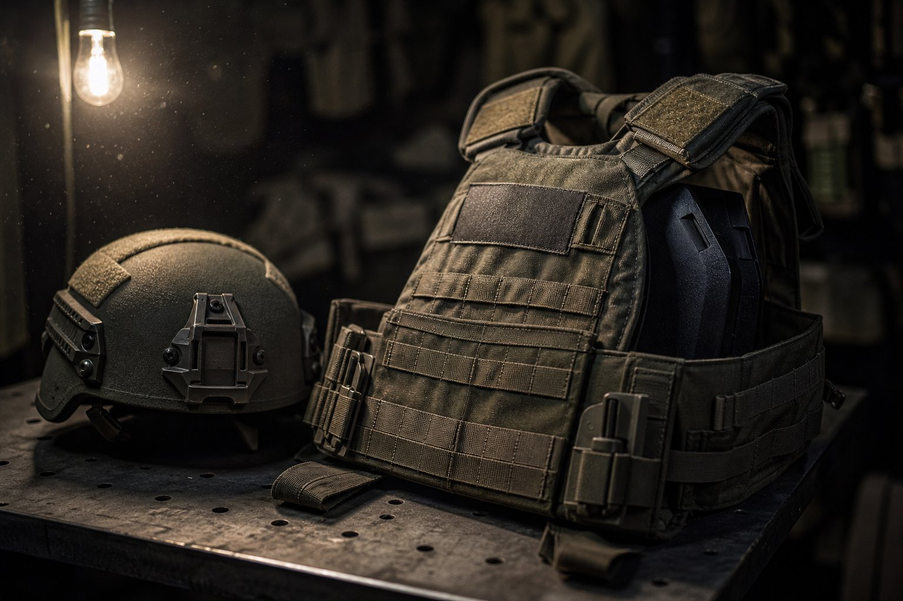
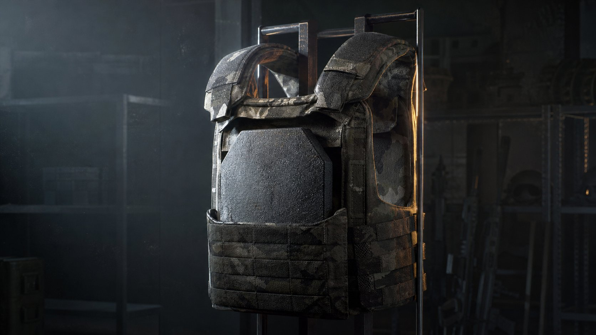

1. Comprendre les tiers T1 → T6
Chaque palier d'armure représente l'énergie cinétique absorbable. En S7, la suppression de la RNG de pénétration T5/T6 rend les paliers prévisibles : un palier supérieur gagne presque toujours contre le inférieur à munitions équivalentes.
| Tier | Rôle | Modes conseillés |
|---|---|---|
| T1–T2 | Protection minimale, poids plume | Rat kits, PvE, runs rapides |
| T3 | Le sweet spot budget | Normal standard, apprentissage tactique |
| T4 | Cap Normal S7 — la norme compétitive | Normal, début Lockdown |
| T5 | Cap Lockdown S7 — haute compétition | Lockdown, Forbidden light |
| T6 | Forbidden uniquement | Endgame, boss fights, PMC vs PMC |
Le coût réel du passage de palier
La question « quelle armure prendre » se répond rarement par le tier seul. Le coût du passage de palier est ce qui décide si l'opération se rentabilise, et ce coût se compose de trois termes.
| Terme | Nature | Comment le limiter |
|---|---|---|
| Capital immobilisé | Le prix d'achat de l'armure, en Koen | Ne jamais dépasser un tiers de votre réserve disponible |
| Coût de munition | La classe de munition que ce palier exige | Vérifier le plafond du mode avant l'achat |
| Poids et mobilité | La pénalité de déplacement, non chiffrable en Koen | Comparer au gain réel en duels simulés |
Le troisième terme est celui que les tableaux de prix ignorent le plus souvent, et c'est pourtant le plus décideur. Sur les cartes où le combat se décide en course, une armure de palier supérieur qui vous ralentit perd contre une armure de palier inférieur qui vous laisse arriver le premier. Le palier supérieur ne se « rattrape » pas en tirant mieux : il faut d'abord être debout au bon endroit.
Erreur de classement fréquente. Acheter une armure de palier 6 sans avoir vérifié la classe de munition disponible dans le mode visé produit une armure qui encaisse moins bien qu'une palier 4, parce que la munition de palier 5 rebondit dessus. Le palier d'armure et la classe de munition ne sont pas deux nombres indépendants : ils forment une paire.
2. Zones protégées : ce que chaque palier couvre
- Torse + ventre : couverture de base des gilets S/A-tier.
- Dos : indispensable en retraite — la mort la plus idiote d'ABI arrive de dos.
- Flancs/côtes : sur les porte-plaques premium uniquement.
- La tête n'est JAMAIS couverte par un gilet : à associer avec un casque T4+.
3. Bien choisir son armure
- Poids vs mobilité : un T6 à 10 kg vous ralentit de 12 % — mortel pour rotate en last-circle.
- Durabilité : au-delà de 50 % de dégâts, vendez/pilez — la valeur de revente chute.
- Zones vs muns : contre des muns supérieures (T5+), les zones ne suffisent plus : fuyez ou équipez-vous.
- Budget : BT101 (T6 ~450K) vs 6B43 (T5 ~280K) : le 6B43 est souvent le meilleur rapport performance/Koen.
S7 rappel
Caps d'équipement par mode : Normal T4 max · Lockdown T5 max · Forbidden T6. Un T6 en Normal rapporte moins de victoires qu'un bon T4 bien moddé — et coûte quatre fois plus cher à perdre.
Les pièces de référence, classe par classe
Les valeurs ci-dessous proviennent d'une base de données de référence communautaire qui recoupe les données du jeu. Elles sont marquées Documenté : ce ne sont pas des chiffres publiés par l'éditeur, mais des valeurs cohérentes entre elles et cohérentes avec le comportement observé en jeu.
| Pièce | Classe | Durabilité | Matériau | Zone |
|---|---|---|---|---|
| KN Regulation Body Armor | 3 | 35 | Aramide | Torse |
| F70 Tactical Helmet | 3 | 25 | Composite | Casque |
| SEK Fortress Body Armor | 4 | 50 | Aluminium | Torse |
| Spartan B Body Armor | 4 | 50 | Aramide | Torse |
| SH40 Military Helmet | 4 | 50 | Acier | Casque |
| SH60 Mask | 4 | 35 | Composite | Masque |
| 03 Heavy Tactical Helmet | 5 | 45 | Composite | Casque |
| BT6 Heavy Body Armor | 5 | 90 | Titane | Torse |
| AN95 Heavy Blast Helmet | 5 | 55 | Titane | Casque |
| AN95 Military Bulletproof Mask | 4 | 50 | Verre | Masque |
Ce que la durabilité change vraiment. La
durabilité n'est pas un second chiffre de protection : c'est le nombre
de
La hiérarchie des matériaux est constante dans tout le tableau : le titane tient le plus longtemps, puis l'acier, puis l'aluminium et le composite, et l'aramide ferme la liste. Mais la classe reste prioritaire : une pièce en titane de classe 5 vaut mieux qu'une pièce en titane de classe 4, et une pièce en composite de classe 5 vaut mieux qu'une pièce en aluminium de classe 4 face à une arme de classe 5.
Le modèle de pénétration, en clair
Depuis la Saison 7, les gilets de classe V et VI ne se percent plus par chance de tir : il faut abaisser leur durabilité sous un seuil. Ce seuil, l’éditeur ne l’a pas publié. En revanche, le modèle communautaire est stable et documenté : le Pierce Level d’une munition vaut la pénétration divisée par dix, arrondie à l’entier inférieur ; au-dessus de la classe de l’armure, la balle passe à chaque coup ; à classe égale, elle passe dans 80 à 100 % des cas avec des dégâts réduits ; en dessous, la chance s’effondre et il faut viser les zones non protégées.
Deux calculateurs web appliquent ce modèle sur la durabilité réelle de votre pièce, sans rien installer : le calculateur d’armure d’abi-helper.com (nouvel onglet) et le constructeur de loadout de qrts.ru (nouvel onglet). Le second affiche volontairement une chance de pénétration à zéro sur un gilet de classe V ou VI neuf, tant que le seuil de durabilité n’est pas atteint : c’est la traduction directe de la règle de la Saison 7. Communautaire
4. Le leadership T5 et T6, pièce par pièce
Une armure ne se juge pas sur son tier seul mais sur ce qu'elle protège, son poids, ses pénalités d'ergonomie et son prix. Voici les pièces que la communauté place en tête pour chaque palier, avec les statistiques officielles à l'appui. Communautaire
| Palier | Pièce | Ce qu'elle protège | À retenir |
|---|---|---|---|
| T5 | BT6 Heavy | Poitrine + haut abdomen | Le choix T5 « tout compris » — mais 2,5× le prix du M4 : c'est un achat de fin de progression |
| M4 Defender | Poitrine | Meilleur rapport T5 selon la communauté : plus grand pool de PV, meilleure viabilité au réparation, excellent stockage | |
| KN Field Commander | Poitrine seule | Pénalités décrochantes, prix raisonnable, plus de durabilité que la 926 — le choix « mobilité » | |
| T6 | KN Composite | Poitrine + haut abdomen | Le standard T6 : protection complète, poids raisonnable, pénalités correctes |
| Spartan B | Poitrine | Le « tank » — mais très lent : à réserver au raid où l'on accepte de trade la mobilité |
Le piège du T6 « pour être tranquille »
Le raisonnement « je mets du T6 et je ne meurs plus » est faux, et il coûte cher. En Normal, le cap officiel est T4 : un T6 n'y apporte aucun avantage mécanique face à un T4 bien joué, mais il coûte plusieurs fois plus cher à perdre. Et comme l'a dit un joueur du subreddit : « la plupart de tes morts seront un tir dans le masque » — ce qui tue, ce n'est pas le tier du torse, c'est le visage. Communautaire
La règle qui tient : le casque et le masque protègent plus que le gilet. Un T5 avec masque T5 bat un T6 avec visage nu.
Les deux builds qui résument l'état du jeu
- Budget — T3 sur le torse, casque T3 à visière, rig Canvas et sac Moyen, munitions T4. On survit aux tireurs de niveau moyen et on perfore les casques standard. C'est le kit de la phase 1 de l'économie. Communautaire
- Chad — H416 ou FAL entièrement moddées (barre long, suppresseur premium, chargeur 60, optique holographique), M995 T5/6, armure T5-T6 pleine protection, casque T5 avec visière T5, grand rig pour porter les chargeurs et le médical. C'est le kit Armory et Lockdown haut. Communautaire
Compléter le set
Armure sans casque = moitié de protection ; armure sans casque audio = moitié d'information. Complétez les trois.